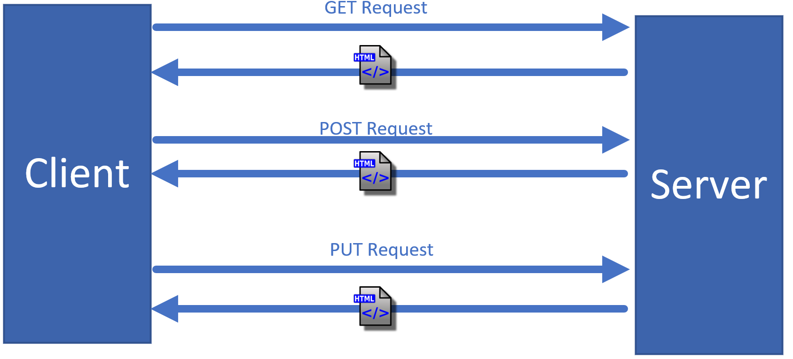
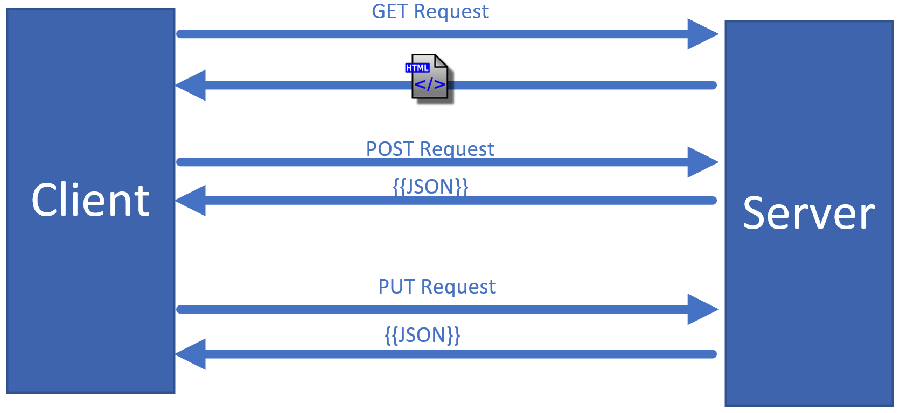
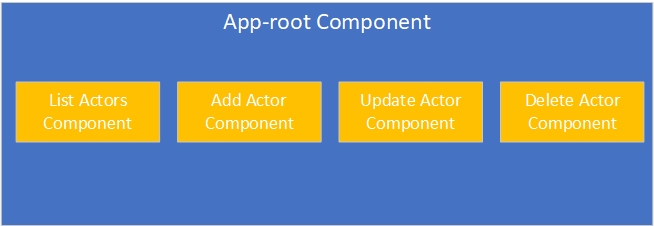
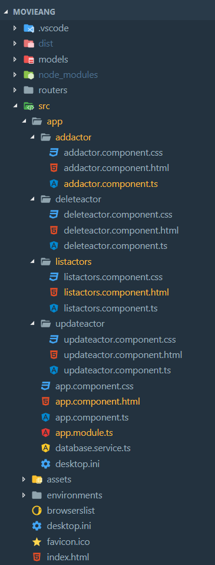
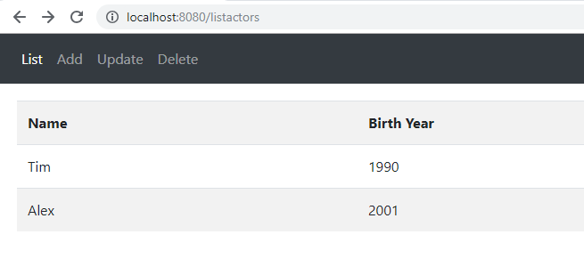
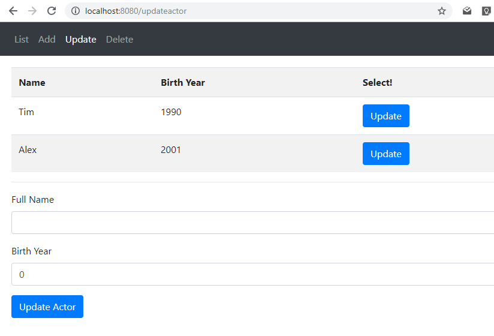
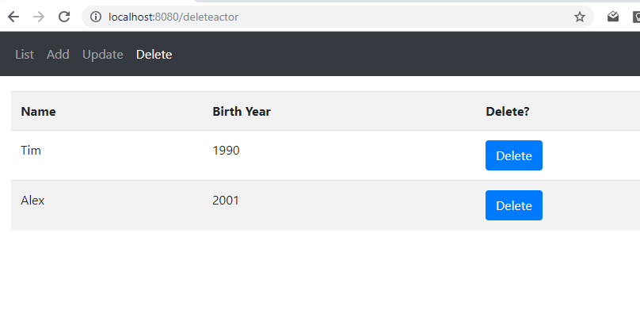
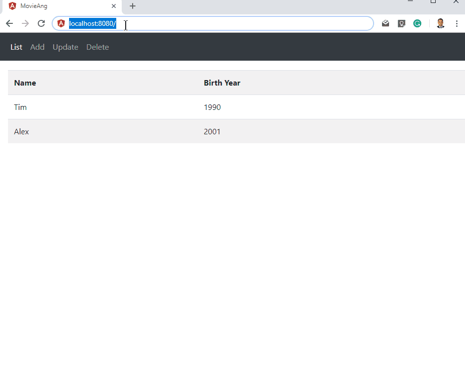
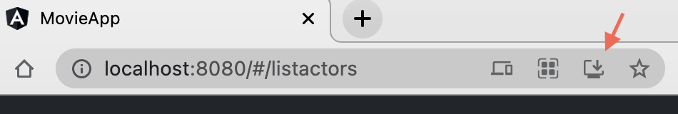
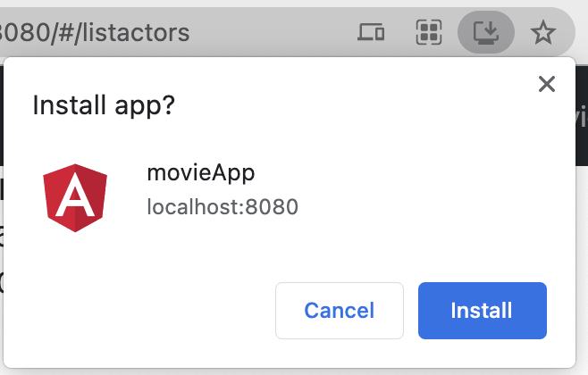

Single Page Application
Single-Page Applications (SPAs) are Web apps that load a single HTML page and dynamically update that page as the user interacts with the app.
In other words, in Multi-Page Applications (MPAs), the server responds with HTML files with each request. The client (such as browsers) has to render the whole page again. Sending a new HTML file might also include its static assets such as CSS, JS, png files.

In the case of SPAs, clients load a single HTML that represents most of the web app and communicate with their servers via HTTP requests.

Disadvantages of Single Page Applications
- History: Browsers such as Chrome store history so that web pages load quickly when users hit the back button. The back button takes you the previous page, not the previous state (Component) of your app.
- Loading CSS and JS: SPAs might get higher booting time as they have to load most of the assets in advance.
- Analytics:Â Analytics tools track page views by default, not components or app states.
- Security: Part of the web app engine will be on the client side.
Routing & Navigation [1,2]
The Angular Router enables navigation from one view to the next as users perform application tasks.
In most web applications, users navigate from one page to the next as they perform application tasks. Users can navigate in these ways:
- Entering a URL in the address bar Following links,
- clicking buttons,
- and so on Going backward or forward in the browser history
In Angular applications, users can navigate in the same three ways but they’re navigating through components (the building blocks of Angular apps). We can navigate because we have the Angular router. The router can interpret a browser URL as an instruction to navigate to a component and pass optional parameters (which contain information) to the component to give it contextual information and help it decide which specific content to present or what it needs to do. We can bind the router to links on a page, and it will navigate to the appropriate component when the user clicks a link. We can navigate imperatively when the user clicks a button, selects from a drop-down, or responds to some other stimulus from any source. The router logs activity in the browser’s history, so the back and forward buttons work as well.
Router imports
The Angular Router is an optional service that presents a particular component view for a given URL. It is not part of the Angular core. It is in its own library package, @angular/router. Import what you need from it as you would from any other Angular package.
import { RouterModule, Routes } from '@angular/router';
RouterConfiguration
A routed Angular application has one singleton instance of the Router service. When the browser's URL changes, that router looks for a corresponding Route from which it can determine the component to display.
A router has no routes until you configure it. The following example creates four route definitions, configures the router via the RouterModule.forRoot method, and adds the result to the AppModule's imports array.
const appRoutes: Routes = [
{ path: "listactors", component: ListactorsComponent },
{ path: "addactor", component: AddactorComponent },
{ path: "updateactor", component: UpdateactorComponent },
{ path: "deleteactor", component: DeleteactorComponent },
{ path: "", redirectTo: "/listactors", pathMatch: "full" },
];
The appRoutes array of routes describes how to navigate. Pass it to the RouterModule.forRoot method in the module imports to configure the router.
Each Route maps a URL path to a component. There are no leading slashes in the path. The router parses and builds the final URL for you, allowing you to use both relative and absolute paths when navigating between application views.
The empty path in the fifth route represents the default path for the application, the place to go when the path in the URL is empty, as it typically is at the start. This default route redirects to the route for the /listactors URL and, therefore, will display the ListactorsComponent.
It is possible to add ** path which is a wildcard. The router will select this route if the requested URL doesn't match any paths for routes defined earlier in the configuration. This is useful for displaying a "404 - Not Found" page or redirecting to another route.
The order of the routes in the configuration matters and this is by design. The router uses a first-match wins strategy when matching routes, so more specific routes should be placed above less specific routes. In the configuration above, routes with a static path are listed first, followed by an empty path route, that matches the default route. The wildcard route comes last because it matches every URL and should be selected only if no other routes are matched first.
Router outlet
Given this configuration, when the browser URL for this application becomes /listactors, the router matches that URL to the route path /listactors and displays the ListactorsComponent after a RouterOutlet that you've placed in the host view's HTML.
<router-outlet></router-outlet>
<!-- Routed views go here -->
Router links
Now you have routes configured and a place to render them, but how do you navigate? The URL could arrive directly from the browser address bar. But most of the time you navigate as a result of some user action such as the click of an anchor tag.
Consider the following template:
<a class="nav-link" routerLink="/listactors" routerLinkActive="active">List </a>
The RouterLink directives on the anchor tags give the router control over those elements. The navigation paths are fixed, so you can assign a string to the routerLink (a "one-time" binding).
Had the navigation path been more dynamic, you could have bound to a template expression that returned an array of route link parameters (the link parameters array). The router resolves that array into a complete URL.
The RouterLinkActive directive on each anchor tag helps visually distinguish the anchor for the currently selected "active" route. The router adds the active CSS class to the element when the associated RouterLink becomes active. You can add this directive to the anchor or to its parent element.
Base Ref
Most routing applications should add a <base> element to the index.html as the first child in the <head> tag to tell the router how to compose navigation URLs.
As the app folder is the application root, set the href value exactly to '/'. This line should be added to /src/index.html
<base href="/">
More details on Routing and Navigation in Angular:Â https://angular.io/guide/router
Now, let's reimplement the movie database application to be a multi-component app that is controlled by a router.
We will add four components that represent the four CRUD operations. These components work as child components to the App-root component as depicted below:

To add the four components using Angular CLI
ng generate component listactors
ng generate component addactor
ng generate component updateactor
ng generate component deleteactor
The project structure will be:

List Actors Component
This component will be responsible for fetching and displaying all the actors in the database.
listactors.component.html
<div class="section">
<table class="table table-striped">
<tr>
<th>Name</th>
<th>Birth Year</th>
</tr>
<tr *ngFor="let item of actorsDB">
<td>{{item.name}}</td>
<td>{{item.bYear}}</td>
</tr>
</table>
</div>
Line 7 iterates through all items in the array actorsDB. It generates a new <tr> for each item. Lines 8 and 9 use string interpolation {{}} to display the values of name and bYear respectively.
The backend logic of the component is coded in a file named: listactors.component.ts
import { Component, OnInit } from "@angular/core";
import { DatabaseService } from "../database.service";
@Component({
selector: "app-listactors",
templateUrl: "./listactors.component.html",
styleUrls: ["./listactors.component.css"],
})
export class ListactorsComponent implements OnInit {
actorsDB: any[] = [];
constructor(private dbService: DatabaseService) {}
ngOnInit() {
console.log("Hi From ListActors ngIOnit");
this.dbService.getActors().subscribe((data: any[]) => {
this.actorsDB = data;
});
}
}
Line 7, which is the constructor of the component, registers the need for a dependency which is the DatabaseService. The callback function ngOnInit which will be invoked by Angular as part of the component's lifecycle, uses the dbService to fetch all the actors from the database.
Here is output listactors component looks like:

Add Actor Component
Add actor component has two input fields and a button which is linked to a function named onSaveActor (addactor.component.ts@line17).
<div class="section">
<div class="form-group">
<label for="actorName">Full Name</label>
<input type="text" class="form-control" id="actorName" [(ngModel)]="fullName">
</div>
<div class="form-group">
<label for="actorName">Birth Year</label>
<input type="number" class="form-control" id="actorName" [(ngModel)]="bYear">
</div>
<button type="submit" class="btn btn-primary" (click)="onSaveActor()">Save Actor</button>
</div>
addactor.component.ts
import { Component, OnInit } from "@angular/core";
import { DatabaseService } from "../database.service";
import { Router } from "@angular/router";
@Component({
selector: "app-addactor",
templateUrl: "./addactor.component.html",
styleUrls: ["./addactor.component.css"],
})
export class AddactorComponent {
fullName: string = "";
bYear: number = 0;
actorId: string = "";
constructor(private dbService: DatabaseService, private router: Router) {}
onSaveActor() {
let obj = { name: this.fullName, bYear: this.bYear };
this.dbService.createActor(obj).subscribe(result => {
this.router.navigate(["/listactors"]);
});
}
}
The constructor of this component has two dependencies: the DatabaseService and the Router as shown in line 15. The onSaveActor function generates the new actor objects and passes it to the service to be sent to the server via a post request. Line 20 uses the router service to redirect the client to another component. In other words, replace the current component with another one.
The addactor component:

Update Actor Component
To select the actor we want to update, this component lists all the available actors first in a table format.
<div class="section">
<table class="table table-striped">
<tr>
<th>Name</th>
<th>Birth Year</th>
<th>Select!</th>
</tr>
<tr *ngFor="let item of actorsDB">
<td>{{item.name}}</td>
<td>{{item.bYear}}</td>
<td><button type="submit" class="btn btn-primary" (click)="onSelectUpdate(item)">Update</button></td>
</tr>
</table>
<hr>
<div *ngIf="actorsDB.length>0">
<div class="form-group">
<label for="actorName">Full Name</label>
<input type="text" class="form-control" id="actorName" [(ngModel)]="fullName">
</div>
<div class="form-group">
<label for="actorName">Birth Year</label>
<input type="number" class="form-control" id="actorName" [(ngModel)]="bYear">
</div>
<button type="submit" class="btn btn-primary" (click)="onUpdateActor()">Update Actor</button>
</div>
</div>
Line 15 has the *ngIf directive that will show the update form only if there is at least one actor to update.
udpateactor.component.ts
import { Component, OnInit } from "@angular/core";
import { DatabaseService } from "../database.service";
import { Router } from "@angular/router";
@Component({
selector: "app-updateactor",
templateUrl: "./updateactor.component.html",
styleUrls: ["./updateactor.component.css"],
})
export class UpdateactorComponent implements OnInit {
fullName: string = "";
bYear: number = 0;
actorId: string = "";
actorsDB: any[] = [];
constructor(private dbService: DatabaseService, private router: Router) {}
//Get all Actors
onGetActors() {
console.log("From on GetActors");
return this.dbService.getActors().subscribe((data: any[]) => {
this.actorsDB = data;
});
}
// Update an Actor
onSelectUpdate(item) {
this.fullName = item.name;
this.bYear = item.bYear;
this.actorId = item._id;
}
onUpdateActor() {
let obj = { name: this.fullName, bYear: this.bYear };
this.dbService.updateActor(this.actorId, obj).subscribe(result => {
this.onGetActors();
this.router.navigate(["/listactors"]);
});
}
ngOnInit() {
this.onGetActors();
}
}
The backend logic of the update component requests two services to be injected (by the dependency injection) which are: DatabaseService and Router.
DatabaseService will be used to fetch all the actors form the database while the Router service will be used to redirect the client side to another component at the end of the update operation.
The updateactor component:

Delete Actor Component
This component lists all the available actors and deletes the selected one.
deleteactor.component.html
<div class="section">
<table class="table table-striped">
<tr>
<th>Name</th>
<th>Birth Year</th>
<th>Delete?</th>
</tr>
<tr *ngFor="let item of actorsDB">
<td>{{item.name}}</td>
<td>{{item.bYear}}</td>
<td><button type="submit" class="btn btn-primary" (click)="onDeleteActor(item)">Delete</button></td>
</tr>
</table>
</div>
deleteactor.component.ts
import { Component, OnInit } from "@angular/core";
import { DatabaseService } from "../database.service";
import { Router } from "@angular/router";
@Component({
selector: "app-deleteactor",
templateUrl: "./deleteactor.component.html",
styleUrls: ["./deleteactor.component.css"],
})
export class DeleteactorComponent implements OnInit {
actorsDB: any[] = [];
constructor(private dbService: DatabaseService, private router: Router) {}
//Get all Actors
onGetActors() {
console.log("From on GetActors");
return this.dbService.getActors().subscribe((data: any[]) => {
this.actorsDB = data;
});
}
//Delete Actor
onDeleteActor(item) {
this.dbService.deleteActor(item._id).subscribe(result => {
this.onGetActors();
this.router.navigate(["/listactors"]);
});
}
// This callback function will be invoked with the component get initialized by Angular.
ngOnInit() {
this.onGetActors();
}
}
This is how the deleteactor component looks like:

Routing
To configure our routing, add this array to app.module.ts just before the @NgModule decorator.
const appRoutes: Routes = [
{ path: "listactors", component: ListactorsComponent },
{ path: "addactor", component: AddactorComponent },
{ path: "updateactor", component: UpdateactorComponent },
{ path: "deleteactor", component: DeleteactorComponent },
{ path: "", redirectTo: "/listactors", pathMatch: "full" },
];
Import the RouterModule and provide the appRoutes array as input.
RouterModule.forRoot(appRoutes)
Don't forget to import the Routes and RouterModule from "@angular/router":
import { RouterModule, Routes } from "@angular/router";
So, the app.module.ts will be:
import { BrowserModule } from "@angular/platform-browser";
import { NgModule } from "@angular/core";
import { AppComponent } from "./app.component";
import { DatabaseService } from "./database.service";
import { HttpClientModule } from "@angular/common/http";
import { FormsModule } from "@angular/forms";
import { ListactorsComponent } from "./listactors/listactors.component";
import { AddactorComponent } from "./addactor/addactor.component";
import { DeleteactorComponent } from "./deleteactor/deleteactor.component";
import { UpdateactorComponent } from "./updateactor/updateactor.component";
import { RouterModule, Routes } from "@angular/router";
const appRoutes: Routes = [
{ path: "listactors", component: ListactorsComponent },
{ path: "addactor", component: AddactorComponent },
{ path: "updateactor", component: UpdateactorComponent },
{ path: "deleteactor", component: DeleteactorComponent },
{ path: "", redirectTo: "/listactors", pathMatch: "full" },
];
@NgModule({
declarations: [
AppComponent,
ListactorsComponent,
AddactorComponent,
UpdateactorComponent,
DeleteactorComponent,
],
imports: [
RouterModule.forRoot(appRoutes),
BrowserModule,
HttpClientModule,
FormsModule,
],
providers: [DatabaseService],
bootstrap: [AppComponent],
})
export class AppModule {}
Remember:
- import @line30: to import modules only and not the services or components.
- declare @line23: to declare components only.
- provide @line37: to list the required services only.
Now its time to build the navigation bar which will be located in the parent component 'app-root'.
Open app.component.html and paste this code:
<nav class="navbar navbar-expand-sm bg-dark navbar-dark">
<ul class="navbar-nav">
<li class="nav-item">
<a class="nav-link" routerLink="/listactors" routerLinkActive="active">List </a>
</li>
<li class="nav-item">
<a class="nav-link" routerLink="/addactor" routerLinkActive="active">Add </a>
</li>
<li class="nav-item">
<a class="nav-link" routerLink="/updateactor" routerLinkActive="active">Update</a>
</li>
<li class="nav-item">
<a class="nav-link" routerLink="/deleteactor" routerLinkActive="active">Delete</a>
</li>
</ul>
</nav>
<router-outlet></router-outlet>
source:Â https://www.w3schools.com/bootstrap4/bootstrap_navbar.asp
Line 21 represents the Router outlet which is where Angular has to place the selected component as discussed HERE.
To run your app:
ng build
node server.js
Here is how the app looks like:

Angular Pipes
Angular pipes are functions that are used to transform data in Angular templates. These functions take input data values, transform/process them and return a single output value.
Now, let's build a pipe that takes a string data value and two integer parameters. The pipe's function needs to return a substring using the first parameter as the starting index and the second parameter as the last index.
Step 1: add a pipe to your project
ng generate pipe w10strsub
or
ng g p w10strsub
Now, you got two new files in your project
Now open w10strsub.pipe.ts and update the code to be:
import { Pipe, PipeTransform } from '@angular/core';
@Pipe({
name: 'w10strsub'
})
export class W10strsubPipe implements PipeTransform {
transform(value: string, ...args: number[]): string {
return null;
}
}
where 'value' is the value the pipe function is invoked on (i.e. the value before the pipe character) and the parameters are the values that are placed after the pipe function.
Therefore, the syntax for calling the pipe is:
{{value | pipeFunction:param1:param2:param3}}
Now, let's put the logic:
import {
Pipe,
PipeTransform
} from '@angular/core';
@Pipe({
name: 'w10strsub'
})
export class W10strsubPipe implements PipeTransform {
transform(value: string, ...args: number[]): string {
let transformedStr = '';
let startingIndex = args[0];
let stopIndex = args[1];
transformedStr = value.substring(startingIndex, stopIndex);
return transformedStr;
}
}
To test our new pipe:
Add the following statements to your templates
<td>{{item.name| w10strsub:1:2}}</td>
<td>{{"Week 10 Lab"| w10strsub:5:9 }}
Progressive Web Apps
Progressive web apps (PWA) are web applications that are capable to give users an experience similar to native apps. The main advantages of PWA apps are:
- installable: can be installed locally ( works offline)
- progressively enhanced
- responsively designed: it works on multiple platforms such as desktop, mobile, and tables
- discoverable: can be discovered by the search engines
- network-independent: it works offline
- secure: much more secure than ordinary web applications
A progressive web application (PWA) is a type of application software delivered through the web, built using common web technologies including HTML, CSS and JavaScript. It is intended to work on any platform that uses a standards-compliant browser, including both desktop and mobile devices.
Since a progressive web app is a type of webpage or website known as a web application, they do not require separate bundling or distribution. Developers can just publish the web application online, ensure that it meets baseline "installability requirements", and users will be able to add the application to their home screen. Publishing the app to digital distribution systems like Apple App Store or Google Play is optional.
source: Wikipedia (
https://en.wikipedia.org/wiki/Progressive_web_application)
What are the requirements to make your app installable?
In order to make your app comply with PWA standards you need the following:
- web application (Angular application)
- manifest file: a JSON file contains information about the app such as:
- name
- description
- language
- set of icons
- theme
- start_url
- Service Worker: it's a JavaScript file that:
- runs in the background (not the main browser thread)
- intercepting all the network requests from/to your app
- saving (caching) or retrieving resources from the cache of your app
- sending push messages
- icon for the app
- secure connection (the web app is served from an HTTPS server). If you serve your PWA app from HTTP (unsecured), then your app will be installable on 'localhost' only.
How to make my Angular application a PWA app?
Good news!! Angular CLI can do it for you. All you need to do is to execute the following command on the root of you project:
ng add @angular/pwa
Now build your app again:
ng build
To test, navigate to your app and you must see the install icon as depicted below:


References:
1.[Book] Angular 5 Projects – Mark Clow.
2. https://angular.io/guide/router